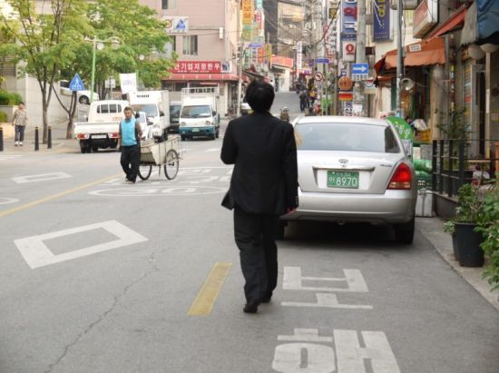

那个落败后的孤独背影
#1 那个落败后的孤独背影 作者：雅匪 发表时间：2012-5-11 17:31:32

满头大汗的他收拾完棋子，从座位上倏地站起，疾步走出对局室，消失在了韩国棋院外的小巷深处。此时的他该是多么痛苦，多么自责，可是独自在韩国陌生街头的他只是如小跑般疾步走着，一声不吭的样子反而让人心碎。这个已过而立之人的男人以如此戏剧性的结果告别了晋升九段最好的机会，也让中国队在16强战中占据13席的辉煌战绩变得索然无味。胡耀宇八段就这样消失在了巷子深处，留下的除了无比孤独的背影和一局充满遗憾的棋局再无其他。
另一边，俞斌九段在研究室一遍遍替黑棋寻找活棋的办法，却眼睁睁看着胡耀宇在读秒声的催促下断送好局。当确定黑棋已无活路之时，俞斌九段没有等到比赛结束就走出了研究室，洗完脸回来的时候双眼通红。作为中国队总教练，他还是无法相信一向稳重的胡耀宇竟然会把这样一局赢到手的棋输出去。之前所有累积着的快乐本想等着获胜后一起庆祝，却没想到在到达终点的最后一刻胡耀宇倒下了，留下的是太多太多的遗憾。
2012年5月9日，多年后的胡耀宇无论在哪里过着怎样的生活，一定会记得这一天发生的一切，因为回忆太过痛苦，所以无法忘却。30岁之后进入世界大赛半决赛的机会多么宝贵，并且就算只是一个亚军也可以确保中国队夺冠，同时让胡耀宇成为中国第34个九段。可是这一切的一切都随着一个无法理解的失误烟消云散，这个曾经和古力、孔杰并称“国少三剑客”的男人，终于还是没能登上世界的巅峰，用一个冠军证明自己并非浪得虚名。同样的场景，不禁让人想起五年前的LG杯，彼时的胡耀宇虽然在决赛中以1:2不敌台北棋手周俊勋，但是25岁的年纪不管是旁人或是自己，都毫不怀疑下一个机会将很快到来。谁料这一等便是五年，25岁的青年也步入而立之年，结婚、生子，渐渐淡出了人们的视线。所以当本届BC卡杯他连胜风头正劲的芈昱廷和谢赫挺进半决赛的时候，所有人都认为这是他夺得世界冠军的最好机会，何况半决赛的对手既不是李世石，也不是李昌镐，“区区”一个白洪淅对于现在的胡耀宇来说，绝对是不可多得的晋级机会。但是胡耀宇输了，把一局已然拿下的棋输了出去，而这一次相信他还能东山再起的人已经难觅踪迹。不知道在他自己内心深处，是否还保留着最初的激情和信心？
5月的首尔早晚还渗透着凉意，在最需要家人的时候，胡耀宇一个人在异国他乡，推开窗面对的是一轮圆月。此时的他脑中一定还在一遍遍回想着今天和白洪淅的对局，一次次自责自己为何没能在读秒声中把优势保持到最后。最后的最后，这个已经30岁的，有些发福的昔日“希望之星”轻叹一声，关上窗躺在宾馆柔软却毫无温度的床上。今夜，又将是一个无眠之夜。
(琪琪)
原文标题：胡耀宇无奈再演悲情时刻 何时能再次“东山再起”
［ 山城刀客 于 2012-5-11 18:56:20 时花20金币送鲜花一朵］
［ 山城刀客 于 2012-5-11 18:56:35 时花20金币送鲜花一朵］
#2 Re:那个落败后的孤独背影 作者：山城刀客 发表时间：2012-5-11 18:48:55
棋场如梦，无时无刻不在演绎着人生的悲喜，一切都是瞬息，而一切都会过去，用心的经历过感悟过就已经足够，而胜负，终究是过眼云烟……#3 Re:那个落败后的孤独背影 作者：越狱行辕 发表时间：2012-5-16 13:26:50
写的真好，虽然我不懂，但是文笔真好 写小说吧